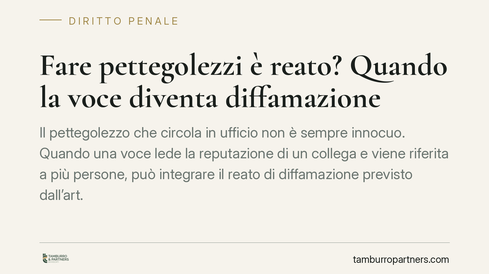

Fare pettegolezzi è reato? Quando la voce diventa diffamazione
Il pettegolezzo che circola in ufficio non è sempre innocuo. Quando una voce lede la reputazione di un collega e viene riferita a più persone, può integrare il reato di diffamazione previsto dall'art. 595 del codice penale. La Cassazione lo ha ribadito in materia di dicerie su presunte relazioni sentimentali, con esiti sia penali sia risarcitori.

Il caso: la voce che diventa reato
Parlare male di qualcuno alle sue spalle non è, di per sé, un fatto giuridicamente irrilevante. Quando la diceria riguarda circostanze idonee a ledere l'onore o la reputazione di una persona e viene comunicata a più soggetti, entra in gioco l'art. 595 del codice penale, che disciplina la diffamazione.
È frequente nei contesti lavorativi: voci su presunte relazioni sentimentali tra colleghi, su comportamenti privati, su presunte scorrettezze professionali. Chi diffonde — o anche solo rilancia — simili notizie può risponderne penalmente, con possibili conseguenze anche sul piano del risarcimento del danno.
Inquadramento normativo
La diffamazione (art. 595 c.p.) si distingue dall'ingiuria — depenalizzata e oggi illecito civile — per un elemento essenziale: l'assenza della persona offesa e la comunicazione con più persone. Non serve che i destinatari siano presenti nello stesso momento: la giurisprudenza di legittimità ritiene sufficiente che l'offesa sia riferita ad almeno due soggetti, anche in tempi e occasioni distinti.
La fattispecie è articolata su tre commi:
- comma 1 (ipotesi base): reclusione fino a un anno o multa fino a 1.032 euro;
- comma 2: aggravante quando l'offesa consiste nell'attribuzione di un fatto determinato (una circostanza precisa e circostanziata, non un giudizio generico);
- comma 3: aggravante quando l'offesa è arrecata con il mezzo della stampa o con altro mezzo di pubblicità.
Una precisazione, perché sul punto circolano informazioni imprecise: la pena detentiva è tuttora prevista in astratto anche per la fattispecie base del comma 1. Ciò che è stato oggetto di interventi della Corte costituzionale e della giurisprudenza CEDU è il carcere per la diffamazione a mezzo stampa (art. 13 L. 47/1948), non la disciplina generale dell'art. 595 c.p.
Sul piano soggettivo è richiesto il dolo generico: è sufficiente la consapevolezza e volontà di comunicare a più persone un'espressione lesiva dell'altrui reputazione. Non occorre il fine specifico di nuocere.
Il confine con la verità e il diritto di critica
Un nodo delicato riguarda la difesa di chi sostiene di aver detto "solo la verità". L'art. 596 c.p. limita in modo rilevante la cosiddetta exceptio veritatis: di regola non è ammessa la prova liberatoria della verità del fatto attribuito. È consentita solo in ipotesi tassative (ad esempio quando l'offeso è un pubblico ufficiale e il fatto riguarda l'esercizio delle sue funzioni, o quando è pendente un procedimento penale sul fatto stesso). In assenza di tali presupposti, dimostrare che il pettegolezzo era "fondato" non basta a escludere il reato.
Diverso è il diritto di critica, tutelato dall'art. 21 della Costituzione: opera solo entro limiti precisi — rilevanza dell'interesse pubblico, verità del nucleo dei fatti e continenza espressiva. Il pettegolezzo su relazioni private raramente supera questi filtri, perché tocca la sfera intima e non un interesse collettivo.
Implicazioni pratiche
Per chi lavora in un contesto d'ufficio, il messaggio è chiaro: la diceria non gode di alcuna "immunità da corridoio". Risponde della diffamazione non solo chi origina la voce, ma anche chi la rilancia a nuovi interlocutori, contribuendo alla sua diffusione.
Attenzione al termine di querela. Dopo la riforma Cartabia (D.Lgs. 150/2022), il termine generale per proporre querela previsto dall'art. 124 c.p. è stato elevato da tre a sei mesi dalla conoscenza del fatto. È un dato cruciale: lasciar decorrere il termine comporta la perdita del diritto a procedere.
Anche il datore di lavoro ha un ruolo. Non è di regola responsabile penalmente per i pettegolezzi dei dipendenti, ma è tenuto a tutelare la personalità morale del lavoratore (art. 2087 c.c.) e può essere chiamato a rispondere sul piano civile se tollera condotte persecutorie o ambienti ostili.
Cosa fare in concreto
- Documenta tempestivamente i fatti: messaggi, testimonianze, contesto della diffusione. La prova della comunicazione a più persone è decisiva.
- Verifica il termine: hai sei mesi dalla conoscenza del fatto per proporre querela. Non attendere.
- Segnala internamente la situazione al datore o all'ufficio risorse umane, sollecitando l'intervento a tutela dell'ambiente di lavoro.
- Valuta la doppia tutela: alla querela penale può affiancarsi l'azione civile per il risarcimento del danno.
- Consigliamo di far esaminare il caso a un professionista prima di agire, per calibrare lo strumento più adatto ed evitare decadenze.
---
*Contributo informativo a cura di Tamburro & Partners - Avv. Giuseppe Tamburro. Non costituisce parere legale.*
Ogni condominio ha una storia a sé.
Se gestisci un'amministrazione e vuoi un confronto su una specifica questione condominiale, scrivi allo studio. Ti rispondiamo entro un giorno lavorativo.